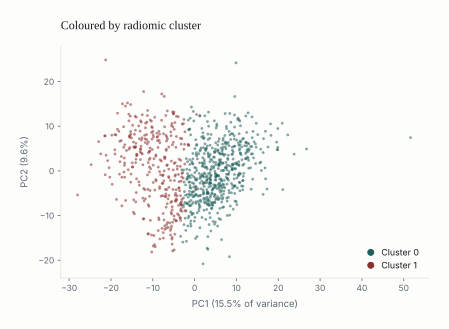
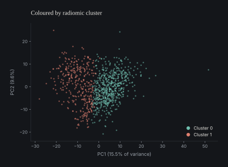
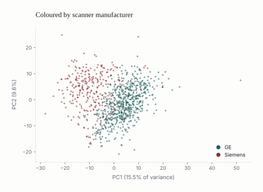
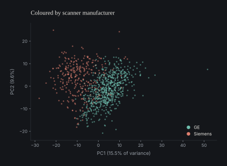

| Claim | Status | Evidence |
|---|---|---|
| The raw two-cluster partition is internally stable | ✅ Supported | Mean bootstrap ARI 0.893 across 20 × 80% subsamples |
| Its separating features read as vascularity | ✅ Supported | SER / PE enhancement-texture descriptors, |
| It separates recurrence-free survival in HR+/HER2+ | ⚠️ Unadjusted only | Log-rank p = 0.010; HR 4.76 → 2.48 (p = 0.29) once manufacturer enters |
| It is defined by molecular subtype | ❌ Not supported | χ² p = 0.146; η² on PC1 = 0.005 |
| It is defined by acquisition | ✅ Supported | Manufacturer p = 8.0 × 10⁻¹⁰⁴; TR η² on PC1 = 0.755 |
| It survives harmonization as the same phenotype | ❌ Not supported | ARI vs raw labels = 0.056 (residualized), 0.065 (ComBat) |
| The post-harmonization structure meets biomarker criteria | ❌ Not supported | Strongest association is with tumour size, not outcome |
Acquisition-Aware Falsification of Unsupervised Radiomic Phenotypes in Multi-Vendor Breast MRI
A falsification framework for acquisition-driven radiomic phenotypes
radiomics
medical imaging
clustering
reproducibility
Detecting sensor induced effects on high dimensional data.
Abstract
We do not offer another radiomic phenotype from breast MRI. We expose a failure mode that survives standard internal validation: the stability trap, in which a partition is reproducible under resampling, looks prognostic, and has no biology underneath it. Running a conventional unsupervised pipeline on a 922-patient multi-vendor breast-MRI cohort produced exactly the kind of result that invites over-interpretation — a stable two-cluster partition with enhancement- and vascularity-like feature differences and a recurrence-free survival split in HR+/HER2+ disease. Scanner identity and pulse-sequence basis were each strongly associated with that partition; molecular subtype and whole-cohort recurrence were not. Manufacturer residualization and ComBat both removed the survival association and preserved internal clusterability while replacing the patient partition entirely. We report this as a falsification, not a biomarker, and propose the minimum acquisition-aware checks a phenotype claim should have to survive.
Keywords
breast MRI, radiomics, phenotype discovery, ComBat harmonization, acquisition confounding, cluster stability, imaging AI reproducibility
ImportantThe result is a negative result
Everything below was produced by a pipeline that a reviewer would recognise as standard. It passes the checks such pipelines are usually asked to pass. It is still wrong. That is the point of the paper.
What survives, and what does not
The falsification chain
The contribution is a procedure, so it is worth stating as one. Each stage asks a question that a stability metric cannot answer, and each has a failing answer in this cohort.
flowchart TB
A["<b>1 · Standard discovery</b><br/>PCA → k-means → internal validity → bootstrap"]
B["<b>2 · Technical adjudication</b><br/>clusters and leading PCs against acquisition vs biology"]
C["<b>3 · Harmonization stress test</b><br/>residualize on manufacturer, ComBat, re-discover, compare partitions"]
D["<b>4 · Biomarker adjudication</b><br/>prespecified criteria on the post-harmonization structure"]
X(["<b>Claim falsified</b> — downgrade to false positive"])
A -- "<b>Stable?</b> yes — bootstrap ARI 0.893" --> B
B -- "<b>Biology-led?</b> no — manufacturer p = 8×10⁻¹⁰⁴, subtype p = 0.15" --> C
C -- "<b>Same patients?</b> no — ARI vs raw 0.056 / 0.065" --> D
D -- "<b>Criteria met?</b> no on all four" --> X
classDef stage fill:#f4f3f0,stroke:#c9c5bd,stroke-width:1px,color:#14181d;
classDef verdict fill:#f6ecea,stroke:#8a2f2f,stroke-width:1px,color:#8a2f2f;
class A,B,C,D stage;
class X verdict;
WarningThe stability trap
A partition can be reproducible — the same solution recovered from resampled data — without being valid — the same patients grouped for the same reason. Bootstrap stability measures the first. Almost every unsupervised radiomics paper reports the first and concludes the second. When the dominant source of variance in a feature matrix is the scanner, the scanner’s structure is itself perfectly reproducible, and stability certifies it.
1 Introduction
Radiomics promises latent imaging subgroups — phenotypes invisible to standard labelling. Breast MRI and dynamic contrast-enhanced imaging yield quantitative features describing heterogeneity in tumour morphology, vascularity and cellularity, and unsupervised learning offers to find structure in them. In theory this lets clinicians recover stable, biologically meaningful groupings that go beyond receptor-based labels (Lambin et al. 2012).
In practice, multi-vendor datasets have shown that acquisition variables — manufacturer, pulse-sequence parameters, field strength, voxel geometry, reconstruction choices, acquisition timing — can drive inference (Zwanenburg et al. 2020). In high dimensions even small acquisition effects can dominate the feature space after dimensionality reduction, and a clustering algorithm will then recover a partition defined by technology rather than biology.
The validation practices in use measure reproducibility, not validity, and cannot distinguish a biologically meaningful phenotype from a technically induced one (Handl et al. 2005). That gap is what we call the stability trap: the inference that a partition is biologically valid because the technical artifact underneath it is stable and reproducible.
Everything downstream follows from one asymmetry: stability is cheap to measure and identity is not. Only one of the two is routinely reported.
This study therefore treats discovery and stability as the beginning of phenotype validation rather than its endpoint, and proposes a falsification chain that subjects any candidate phenotype to acquisition-aware challenges designed to expose technical confounding (Figure 1).
The first stage evaluates the raw feature space, testing whether the dominant principal components track biological or technical variables. The second stress-tests cluster identity: a real biological phenotype should survive manufacturer residualization and ComBat harmonization, so discovery is repeated after manufacturer effects are removed. The third re-evaluates the clinical interpretation after adjustment and across harmonization strategies.
Applying this to 922 breast-MRI patients, we first produce a stable two-cluster phenotype with enhancement-dominant, vascularity-like characteristics and an apparent HR+/HER2+ recurrence-free survival signal — and then show that the dominant variance axes are acquisition, not biology. The contribution is methodological rather than biomarker-driven: a phenotype can be internally stable, visually interpretable, and apparently prognostic while failing every test of biological identity.
2 Background and rationale
2.1 Radiomic phenotype discovery
Radiomics extracts quantitative information from routine images, promising knowledge of tumour phenotype not captured by visual interpretation, and positioning imaging as a bridge to personalized medicine alongside histology, genomics and clinical covariates (Lambin et al. 2012). Breast MRI is a particularly relevant modality: dynamic contrast-enhanced, diffusion-weighted and T2-weighted imaging together with enhancement kinetics carry information on vascularity, cellularity, morphology and tissue heterogeneity (Pinker et al. 2018).
Most prior work is supervised, but the unsupervised setting is where phenotype discovery lives: patients are clustered on the feature space alone, and the resulting clusters are then examined for associations with prognosis, molecular subtype, immune state, stromal composition or pathway activity (Li et al. 2018). This is the route by which image-derived cancer subtypes have been proposed (Yamamoto et al. 2012; Aerts et al. 2014), and there is broad agreement on the potential of radiomics to describe biological variation in tumours (Gillies et al. 2016).
2.2 Supervised versus unsupervised settings
What separates the two is a failure mode that supervision partly avoids. With outcome labels that exist outside the feature space, model performance is judged against a predefined endpoint — molecular subtype, recurrence, treatment response — which limits the influence of technical confounding on inference (Parmar et al. 2015). This is much of why supervised radiomics has moved toward clinical use faster than unsupervised radiomics has (Park et al. 2020).
Unsupervised clustering has no such external anchor. It is built only from a feature space that may encode scanner, protocol and manufacturer effects. If technical differences explain more of the structure than tumour biology does, the algorithm recovers the hardware-defined partition first — and silhouette scores and bootstrap stability then test the reproducibility of that partition rather than its biological validity (Handl et al. 2005).
Mathematical reproducibility can be mistaken for biological validity.
2.3 Technical variance in radiomics
The literature on acquisition effects is extensive: features such as voxel size and gray-level discretization make many descriptors non-reproducible under acquisition variation (Berenguer et al. 2018; Mackin et al. 2015; Duron et al. 2019; Leijenaar et al. 2015). This is a large part of why radiomics has not fully transitioned into clinical workflow, despite standardization efforts such as the Image Biomarker Standardisation Initiative (Zwanenburg et al. 2020; Traverso et al. 2018). MRI compounds the problem, since protocols, coils and pulse sequences differ across vendors (Nyúl and Udupa 1999).
The most direct proof of concept comes from multi-vendor breast-MRI radiomics: non-biological features predicted scanner platform and field strength with AUCs of 0.91–1.00, while the same pipeline predicted tumour biology only modestly (AUC 0.673 for pathological nodal status) without clinical variables (Doran et al. 2021). Radiomic features can encode strong technical signal, and that signal competes with tumour biology inside the same feature space.
2.4 Harmonization and its limits
Feature-level harmonization is the standard remedy. ComBat, developed for batch effects in gene expression, was extended to neuroimaging and radiomics to remove scanner, site and protocol effects while retaining biological information (Johnson et al. 2007; Fortin et al. 2018). In radiomics it has been used almost exclusively to improve cross-site comparability or the transportability of supervised models (Leithner et al. 2022), and it reduces batch effects and improves performance across PET, MRI and multi-centre settings (Da-Ano et al. 2020).
But those evaluations assume the endpoint is what matters. That is the right frame for supervised prediction and the wrong one for unsupervised phenotypes, where the question is what happens to the patient partition after harmonization. If a cluster reflects manufacturer variance more than tumour biology, ComBat can leave the mathematical stability intact while substituting a different partition that also passes validation. Standard metrics raise no alarm, because the mathematical properties have not changed — only the meaning has (Lozano-Montoya and Jimenez-Pastor 2024).
2.5 The validation gap
For prediction modelling it is accepted that internal performance is not enough: claims must face robustness checks, stress tests and external validation before generalizability is granted (Collins et al. 2015). A phenotype claim should likewise be exposed to tests designed to disprove its biological interpretation. The question is not whether a reproducible cluster exists, but whether the same biological claim survives when technical variance is explicitly tested — whether clusters map more strongly to manufacturer than to subtype, whether the leading principal components are acquisition-dominated, whether identity and prognostic relevance survive residualization and ComBat, and whether what remains meets minimum biomarker criteria (Lu et al. 2021).
The argument is not that unsupervised radiomic discovery is invalid. It is that cluster stability is not equivalent to biological validity, particularly in multi-vendor data. The literature already establishes that feature space can be acquisition-dominated and that harmonization can mitigate it (Yamamoto et al. 2012; Traverso et al. 2018; Da-Ano et al. 2020); what is missing is an end-to-end falsification pipeline that tests whether a stable cluster retains its identity and interpretation once known acquisition effects are adjusted for.
3 Materials and methods
3.1 Data
We use a 922-patient breast-MRI dataset with 529 quantitative MRI-derived radiomic features (Saha et al. 2021, 2018). Variables were retained if they had <5% missingness and ≥2 unique values; under these criteria no features were removed. Missing values were median-imputed and all features standardized to zero mean before PCA, clustering, harmonization and survival modelling.
Z-scoring is not cosmetic here. The feature set mixes enhancement kinetics, peak enhancement, signal-enhancement ratio and texture statistics, all reported on different natural scales; without standardization, variance-driven methods such as PCA and k-means would be led by numerical scale rather than data structure.
| Step | Patients | Features | Result |
|---|---|---|---|
| Raw imaging matrix | 922 | 529 | Numeric MRI-derived radiomic features |
| Missingness filter (<5%) | 922 | 529 | No variable exceeded the threshold |
| Unique-value filter (≥2) | 922 | 529 | No constant variables present |
| Median imputation | 922 | 529 | Applied within retained variables |
| Z-score standardization | 922 | 529 | Zero mean, unit variance per feature |
| Matrix entering PCA | 922 | 529 | Input to PCA, k-means, harmonization |
3.2 Standard phenotype discovery
PCA was applied to the standardized matrix and the leading components retained for visualization and clustering. Clustering used k-means across candidate k, with internal validity summarized by silhouette score, Calinski–Harabasz index and Davies–Bouldin index. Bootstrap stability was assessed by 20 repetitions of 80% subsampling and reported as the adjusted Rand index (ARI). Feature differences between clusters were assessed with Welch tests and Benjamini–Hochberg correction. This entire stage was run on the raw partition, to establish that it has a coherent imaging interpretation before any technical challenge is applied.
3.3 Falsification chain and technical adjudication
Four steps. Technical enrichment was measured by comparing cluster labels and PC structure against acquisition variables. Phenotype discovery was then repeated after manufacturer residualization and after ComBat harmonization. Partition identity was quantified by comparing harmonized labels with raw labels using ARI. Finally, clinical interpretability was retested after manufacturer adjustment.
Steps 2 and 3 are the ones missing from conventional practice. Step 3 in particular has no standard reporting slot, which is why partition identity goes unreported even when it has collapsed.
3.4 Clinical and biomarker evaluation
The top screen was recurrence-free survival in the HR+/HER2+ subgroup, where the raw phenotype showed its strongest survival split, using Kaplan–Meier curves, the log-rank test and Cox proportional-hazards models. The cluster effect was then re-estimated with manufacturer in the model, to ask whether it remains interpretable after technical adjustment. The post-harmonization structure was finally assessed against prespecified biomarker criteria. Those criteria are deliberately minimal: they are identification thresholds, not confirmation of biological validity.
4 Results
4.1 A standard workflow produces a plausible but fragile discovery
At first glance the output reads as a phenotype discovery.
The top ten principal components explain 57.9% of the variance, with PC1, PC2 and PC3 at 15.5%, 9.6% and 7.8% (Table 3). The scree plot and the PC1–PC2 projection (Figure 2, Figure 7) show a continuum rather than separated masses: any clustering here draws a gradient boundary, not a natural one.
{kind=link}
{kind=link}
| Principal component | Variance explained | Cumulative |
|---|---|---|
| PC1 | 15.49% | 15.5% |
| PC2 | 9.58% | 25.1% |
| PC3 | 7.75% | 32.8% |
| PC4 | 5.32% | 38.2% |
| PC5 | 4.95% | 43.1% |
| PC6 | 3.74% | 46.8% |
| PC7 | 3.54% | 50.4% |
| PC8 | 2.96% | 53.3% |
| PC9 | 2.41% | 55.8% |
| PC10 | 2.15% | 57.9% |
k-means selected k = 2 on the metrics that are conventionally reported: the highest silhouette score (0.196) and the highest Calinski–Harabasz index (200.9), both declining as k grows (Figure 3). Davies–Bouldin does not agree — k = 2 is its worst solution — which is itself worth noticing, since the selection rests on two of three metrics and the disagreement is rarely reported.
{kind=link}
{kind=link}
Bootstrap stability was strong: the raw k = 2 partition attained a mean ARI of 0.893 (SD 0.084) across 20 subsamples (Figure 9). By the standards usually applied, this is where a phenotype paper would stop.
Feature-level inspection then supplied a biologically plausible reading. The top-ranked separating variables are dominated by signal-enhancement ratio (SER), peak enhancement (PE), entropy, homogeneity and related enhancement-texture descriptors, with |Cohen’s d| above 2.2 for the leading SER entropy and sum-entropy features (Figure 4, Table 4). The phenotype looks vascularity-like: one group with more spatially heterogeneous enhancement, the other more homogeneous. Whether that has a genuine biological basis is, for our purposes, beside the point — what matters is how readily the interpretation attaches.
{kind=link}
{kind=link}
| Feature | Mean C0 | Mean C1 | Δ (C1−C0) | Cohen’s d | q-value |
|---|---|---|---|---|---|
| SER map Entropy tissue T1 | -0.552 | 0.964 | +1.516 | 2.21 | 1.1 × 10⁻¹⁰⁰ |
| SER map sum entropy tissue T1 | -0.552 | 0.963 | +1.515 | 2.21 | 2.7 × 10⁻¹⁰⁹ |
| SER map std dev tissue T1 | 0.550 | -0.960 | -1.510 | -2.20 | 2.5 × 10⁻¹⁶⁴ |
| SER map difference entropy tissue T1 | -0.546 | 0.953 | +1.499 | 2.16 | 1.2 × 10⁻¹⁰³ |
| SER map Homogeneity2 tissue T1 | 0.540 | -0.942 | -1.483 | -2.11 | 2.5 × 10⁻⁹⁵ |
| SER map Homogeneity1 tissue T1 | 0.539 | -0.940 | -1.479 | -2.10 | 1.7 × 10⁻⁹⁷ |
| SER map inverse difference is homom tissue T1 | 0.539 | -0.940 | -1.479 | -2.10 | 1.7 × 10⁻⁹⁷ |
| PE map std dev tissue T1 | 0.532 | -0.927 | -1.459 | -2.05 | 1.7 × 10⁻¹⁶⁴ |
Finally, the raw partition looked prognostically meaningful in HR+/HER2+ disease. Of 101 patients with usable follow-up, Cluster 0 had 55 patients and 2 recurrences; Cluster 1 had 46 patients and 8. Kaplan–Meier curves separate visibly (Figure 5), the log-rank test is significant (p = 0.010), and an unadjusted Cox model gives HR = 4.76 for Cluster 1 versus Cluster 0 (95% CI 1.22–18.61; p = 0.025) (Table 5).
{kind=link}
{kind=link}
| Analysis | Estimate | Interval / rate | p-value | Reading |
|---|---|---|---|---|
| Cluster 0 | 55 patients, 2 events | 3.6% | — | Lower unadjusted recurrence burden |
| Cluster 1 | 46 patients, 8 events | 17.4% | — | Higher unadjusted recurrence burden |
| Log-rank test | — | — | 0.010 | Curves separate |
| Cox, cluster only | HR = 4.76 | 95% CI 1.22–18.61 | 0.025 | Significant before technical adjustment |
In ordinary circumstances this is a reproducible vascularity-like prognostic phenotype. Here it is the counterexample the rest of the paper dismantles.
4.2 The phenotype is acquisition-dominated, not subtype-defined
Once acquisition variables enter, the reading changes. The raw cluster is associated with manufacturer at p = 8.0 × 10⁻¹⁰⁴, and with neither molecular subtype (p = 0.146) nor recurrence (p = 0.766) (Table 6). The contingency is not subtle: Cluster 0 is 93% GE, Cluster 1 is 76% Siemens (Figure 6, Table 7).
| Variable | p-value | Reading |
|---|---|---|
| Manufacturer | 8.0 × 10⁻¹⁰⁴ | Strong association with cluster assignment |
| Molecular Subtype | 0.146 | No significant association |
| Recurrence | 0.766 | No significant association |
{kind=link}
{kind=link}
| Cluster | GE | Siemens | Reading |
|---|---|---|---|
| Cluster 0 | 547 | 39 | Predominantly GE |
| Cluster 1 | 81 | 255 | Predominantly Siemens |
The clearest way to see it is to recolour the same projection. Below is one PC1–PC2 scatter — the same 922 points in the same positions — coloured first by the cluster the algorithm discovered, then by the scanner that acquired the image. Switch between them:




Same points, same axes. Only the colouring changes.
Looking into PC1 directly makes the mechanism explicit. TR, TE, the acquisition matrix and manufacturer all track PC1 far more closely than molecular subtype does, which stays below 0.01 across the leading components (Figure 8, Table 8).
{kind=link}
{kind=link}
| Variable | Kind | PC1 | PC2 | PC3 |
|---|---|---|---|---|
| TR (repetition time) | Technical | 0.755 | 0.567 | 0.421 |
| TE (echo time) | Technical | 0.632 | 0.355 | 0.198 |
| Acquisition matrix | Technical | 0.567 | 0.286 | 0.047 |
| Manufacturer | Technical | 0.489 | 0.119 | 0.011 |
| Field strength | Technical | 0.093 | 0.036 | 0.001 |
| Slice thickness | Technical | 0.075 | 0.130 | 0.018 |
| Molecular subtype | Biological | 0.005 | 0.010 | 0.035 |
| Recurrence | Biological | 0.002 | 0.005 | 0.022 |
η² is inflated for a continuous acquisition parameter when each distinct observed value forms its own group, as TR does here (337 distinct values). Grouped into 20 quantile bins TR still explains 0.56 of PC1, and a purely linear fit gives R² = 0.34. The ordering does not change: acquisition first, biology nowhere. The full sensitivity table is written to
_data/acquisition_eta2_sensitivity.csv.This is the stability trap in its plainest form. The partition is not noisy — it is stable, because the scanner-domain structure it recovers is itself perfectly reproducible. High bootstrap ARI is evidence that the technical signal is consistent, not that the biology is real.
4.3 Harmonization preserves stability and destroys identity
Residualization and ComBat both remove the manufacturer association — and take the phenotype with them.
| Measure | Value |
|---|---|
| Mean bootstrap ARI | 0.893 (SD 0.084) |
| ARI vs raw labels | 1.000 |
| Manufacturer association | 8.0 × 10⁻¹⁰⁴ |
| Molecular subtype association | 0.146 |
| Recurrence association | 0.766 |
The baseline. Stable, and defined by the scanner.
| Measure | Value |
|---|---|
| Mean bootstrap ARI | 0.919 (SD 0.047) |
| ARI vs raw labels | 0.056 |
| Manufacturer association | 0.530 |
| Molecular subtype association | 0.717 |
| Recurrence association | 0.075 |
Manufacturer dependence is gone. So is the partition: an ARI of 0.056 against the raw labels means the two solutions agree at close to chance.
| Measure | Value |
|---|---|
| Mean bootstrap ARI | 0.903 (SD 0.058) |
| ARI vs raw labels | 0.065 |
| Manufacturer association | 0.177 |
| Molecular subtype association | 0.809 |
| Recurrence association | 0.056 |
The same story by a different route. Clusterability survives; identity does not.
The ARI between residualized and raw labels was 0.056; between ComBat and raw, 0.065. Both indicate near-total loss of partition identity. What did not degrade is clusterability: both spaces still split into internally consistent two-cluster solutions, with mean bootstrap ARI of 0.919 and 0.903 respectively (Figure 9, Table 9).
{kind=link}
{kind=link}
Figure 10 makes the same point geometrically: the same patients, in the same projection, sorted into a partition that bears almost no relation to the original one.
{kind=link}
{kind=link}
Plotting the two properties against each other separates concepts that are routinely conflated. Bootstrap stability asks whether a cluster solution can be repeated under resampling. Partition identity asks whether the same patients stay together after a technical adjustment. Here stability is preserved and identity is not — and a validation workflow that looks only at the first would certify this failure as a success.
{kind=link}
{kind=link}
| Condition | Mean bootstrap ARI | SD | ARI vs raw labels | Reading |
|---|---|---|---|---|
| Raw | 0.893 | 0.084 | 1.000 | Stable baseline partition |
| Manufacturer residualized | 0.919 | 0.047 | 0.056 | Stable, but nearly unrelated to the raw labels |
| ComBat harmonized | 0.903 | 0.058 | 0.065 | Stable, but nearly unrelated to the raw labels |
4.4 Neither the survival signal nor the residual structure supports a biomarker claim
The HR+/HER2+ signal does not survive adjustment. Entered into a Cox model alongside manufacturer, the cluster hazard ratio falls from 4.76 to 2.48 and loses significance (95% CI 0.46–13.39; p = 0.291). Manufacturer is likewise non-significant in this subgroup (HR 2.99; p = 0.200) — but with 10 events there are not enough degrees of freedom to separate two correlated predictors, and the honest reading is that the design cannot distinguish them, not that neither matters (Table 10).
| Covariate | Coefficient | Hazard ratio | 95% CI | p-value | Reading |
|---|---|---|---|---|---|
| Raw cluster | 0.908 | 2.48 | 0.46–13.39 | 0.291 | Attenuates and loses significance |
| Manufacturer: Siemens vs GE | 1.097 | 2.99 | 0.56–16.03 | 0.200 | Non-significant, but collinear with cluster |
Structure does remain after the technical confounders are removed — but it is better described as a size-correlated residue than as an orthogonal discovery. The post-harmonization clusters are no longer detectably coupled to manufacturer, and associate most strongly with tumour bounding-box volume (p ≈ 10⁻²⁶). Against the prespecified criteria, that residue fails on every count (Table 11): the recurrence association is weak, radiomic scores add nothing after clinical covariates, and the scores are not directionally consistent within vendors.
| Criterion | Observed result | Status |
|---|---|---|
| Endpoint association | Cluster-level recurrence signals were weak and did not survive adjustment | ❌ Not met |
| Incremental predictive value | Radiomic/vascularity-augmented models did not improve on clinical covariates | ❌ Not met |
| Within-vendor consistency | Partition recovery differs sharply by vendor (ARI vs raw: 0.57 Siemens, 0.07 GE) | ❌ Not met |
| Independence from tumour burden | Strongest surviving association is with bounding-box volume (p ≈ 10⁻²⁶) | ❌ Not met |
The conclusion is not that radiomic clustering is useless. It is that this apparent discovery must be downgraded to a false positive once it passes through acquisition-aware falsification.
TipThe minimum a phenotype claim should have to report
- Multi-condition discovery. Re-run discovery after residualization and after ComBat, not only on raw features.
- Partition identity, not just stability. Report ARI of harmonized labels against the original labels — the number that collapsed here.
- Acquisition variance partitioning. Report η² or equivalent for acquisition and biological variables on the leading components.
- Harmonization sensitivity of clinical claims. Re-estimate every survival or outcome association after technical adjustment.
- Within-vendor sanity checks. Repeat discovery inside each vendor stratum; a biological phenotype should reappear in both.
5 Discussion
5.1 The negative result is the result
A radiomic partition can be internally stable, visually coherent and apparently prognostic while failing to represent a biological subgroup. Our two-group partition looked compelling on every metric that is conventionally reported: it was reproducible under resampling, carried a vascularity-associated profile, and suggested an HR+/HER2+ subgroup with elevated recurrence. Under inspection it aligned with scanner manufacturer and pulse sequence.
This is what the term stability trap is for. The raw phenotype was not meaningless noise — it was stable precisely because the acquisition signal is stable. The bootstrap scores were misleading only because they were read as evidence of biological truth. The accurate and much narrower inference is that the clustering algorithm recovered a strong, reproducible signal present in the radiomic feature matrix. The falsification chain then establishes that the dominant signal is technical. If there is a positive finding here, it is the invalidation of the phenotype claim, not the identification of a new phenotype.
5.2 The danger is in the language
Feature-wise, the separating variables made sense. SER entropy, SER homogeneity, PE variability, enhancement-volume ratios and wash-in/washout descriptors all suggest increased or decreased vascularity and perfusion. Enhancement-history descriptors are especially interpretable that way in breast DCE-MRI, where enhancement behaviour is already the central radiological finding.
That interpretability is what makes the trap dangerous: familiar vocabulary coats a technically induced partition. This is not an argument for avoiding biologically plausible language — enhancement features are not biologically meaningless. It is an argument that plausibility is not evidence. When the leading features are acquisition-sensitive, vascularity descriptors are a hypothesis, not a confirmation, and the profile should be stated as such — “these features are known to associate with vascularity, and the clusters separate on those features” — until the acquisition-aware checks are passed.
5.3 Stability and identity are separate validation targets
Harmonization is what makes the distinction visible. It did not destroy cluster stability; residualization and ComBat both produced perfectly stable two-cluster solutions. What changed is that the patients in those clusters were no longer the same patients.
In practice this means radiomic validation needs more than silhouette scores and bootstrap stability. A complete phenotype paper should report cluster preservation after acquisition correction, the technical-versus-biological dependencies of the leading components, the harmonization sensitivity of any clinical association, and the conformance of the post-harmonization structure to prespecified biomarker criteria.
5.4 Why within-vendor recovery differs
One asymmetry deserves comment. Repeating discovery inside each vendor stratum recovers the original partition much better within Siemens (ARI 0.574) than within GE (ARI 0.069). The cohort is GE-dominated (628 versus 294), so the raw Cluster 0 is essentially “the GE patients” and carries little internal structure to recover, whereas the smaller Siemens stratum retains a more distinctive feature profile. This is consistent with a partition built from vendor identity rather than biology, and it is also a reminder that within-vendor checks need to be interpreted against stratum size.
5.5 Limitations
The HR+/HER2+ survival analysis rests on 10 events. The divergence between subgroups is dramatic and the confidence interval is correspondingly wide; a larger cohort would be needed to quantify any subtype-specific prognostic effect, and this constraint is endemic to medical imaging analysis.
k-means on principal components was legible and adequate for a falsification exercise, but the technical-confounding argument would be strengthened by repeating it under other unsupervised algorithms.
Harmonization is not ground truth. ComBat and residualization remove technical effects, but the post-harmonization subgroups are not thereby biological. Harmonization should be treated as an adversary in the falsification chain, not as an assurance of validity.
6 Conclusion
Radiomic phenotypes can be internally stable, visually coherent and apparently prognostic while failing multiple tests of biological identity. On a 922-patient multi-vendor breast-MRI cohort, a standard unsupervised workflow produced a stable, vascularity-like two-cluster solution that appeared to carry strong prognostic information in HR+/HER2+ disease. Acquisition-aware falsification changed the interpretation on every count: the leading components and the cluster labels were dominated by manufacturer and pulse-sequence structure; manufacturer adjustment removed the survival association; and residualization or ComBat replaced the original patient partition while leaving its internal stability untouched.
The broad claim is methodological. Stability is the first step of radiomic phenotype validation, not the last. Internal consistency should be accompanied by multi-condition discovery, harmonization sensitivity and within-vendor sanity checks. The analysis here is breast MRI, but the principle applies to any multi-centre or multi-vendor radiomics or imaging-AI setting in which technical variance is stable enough to be mistaken for biology.
7 Supplementary material
NoteS1 · Structural interpretation of the raw PCA and clustering output
| Item | Interpretation |
|---|---|
| Scree plot | Variance declines progressively with no elbow; component count is a modelling choice |
| PC1–PC2 scatter | Patients form a continuous distribution, so any boundary is a gradient cut |
| Silhouette / CH at k = 2 | Best on two of three metrics; Davies–Bouldin selects against k = 2 |
| Bootstrap ARI 0.893 | The partition is reproducible under resampling |
| Cluster–manufacturer χ² | Reproducibility is inherited from the vendor split |
| Post-harmonization ARI | Stability is retained; identity is not |
NoteS2 · Raw cluster assignment by molecular subtype and by recurrence
By molecular subtype
| Cluster | HER2-enriched | HR+/HER2+ | Luminal-like | Triple negative |
|---|---|---|---|---|
| Cluster 0 | 41 | 56 | 383 | 106 |
| Cluster 1 | 18 | 48 | 212 | 58 |
By recurrence event
| Cluster | No recurrence | Recurrence |
|---|---|---|
| Cluster 0 | 527 | 57 |
| Cluster 1 | 306 | 30 |
Neither cross-tabulation shows the concentration that the manufacturer cross-tabulation shows. That contrast is the whole of Section 4.2 in two tables.
NoteS3 · Biological interpretation of the dominant feature patterns
| Feature category | Cluster pattern | Interpretation offered by the language |
|---|---|---|
| SER entropy | Elevated in Cluster 1 | Greater enhancement heterogeneity |
| SER homogeneity | Elevated in Cluster 0 | More spatially uniform enhancement |
| PE variability | Elevated in Cluster 1 | Less uniform peak enhancement |
| Wash-in / washout slopes | Differ between clusters | Perfusion-kinetic difference |
| Enhancement-volume ratios | Differ between clusters | Differing enhancing tissue fraction |
Each row is a plausible sentence. None of them is evidence, because the same features are acquisition-sensitive (Figure 8).
NoteS4 · Within-vendor discovery
| Manufacturer | n | ARI vs raw labels | Silhouette |
|---|---|---|---|
| Siemens | 294 | 0.574 | 0.201 |
| GE | 628 | 0.069 | 0.140 |
NoteS5 · Notes on figures dropped from the source manuscript
Two supplementary figures in the original Word manuscript duplicated main-text figures — a PCA projection coloured by manufacturer and one coloured by raw cluster, both already shown in Figure 7 — and have been folded into the interactive toggle above rather than repeated. Supplementary Figure S1 (cluster distribution within each manufacturer) is the transpose of Figure 6 and is likewise not repeated.
Reproducibility
Every number, table and figure on this page is generated at render time from the pipeline’s own outputs — nothing is transcribed by hand.
| Component | Location | Role |
|---|---|---|
| Analysis pipeline | src/radiomics_stability/ |
Preprocessing, PCA, k-means, stability, harmonization, survival |
| Export step | _prep/export_data.py |
Slims the pipeline outputs into the CSVs this page reads |
| Figure theme | _theme.py |
Palette, typography and light/dark rendering |
| Figure builders | _figures.py |
Every figure on this page |
| Data layer | _data/*.csv |
Patient-level frame, variance, η², KM curves, result tables |
Seeds and hyperparameters are fixed in the pipeline’s config.py (RANDOM_SEED = 42, 20 bootstrap iterations at 80% subsampling, n_init = 20). PCA variance ratios are recomputed here by SVD on the z-scored matrix and reproduce the pipeline’s values; the η² figures reproduce the source manuscript’s Table 9 under the same grouping convention, with the sensitivity analysis noted in Section 4.2.
NoteDepartures from the source Word manuscript
These are corrections, not reinterpretations. The analysis is unchanged.
- Table 12 and heading 5.4 did not exist in the source; numbering here is continuous and generated.
- Two supplementary figures duplicated main-text figures and were dropped (S5 above).
- SER was defined inconsistently — “signal-enhancement ratio” in the results and “surface-enhancement-return” in the discussion. The first is correct and is used throughout.
- The unadjusted Cox p-value was reported as 0.02; the pipeline value is 0.025.
- Zwanenburg et al. was cited in text as 2020 but listed as the 2016 arXiv preprint; the published 2020 Radiology version is cited here.
- Leithner et al. (2022) was cited in text but listed under a co-author’s name; the reference is corrected to its first author.
- A within-vendor asymmetry (ARI 0.574 Siemens vs 0.069 GE) was present in the pipeline output but not discussed in the source; it is addressed in the discussion.
References
Aerts, Hugo J. W. L., Emmanuel Rios Velazquez, Ralph T. H. Leijenaar, et al. 2014. “Decoding Tumour Phenotype by Noninvasive Imaging Using a Quantitative Radiomics Approach.” Nature Communications 5 (1): 4006. https://doi.org/10.1038/ncomms5006.
Berenguer, Roberto, María del Rosario Pastor-Juan, Jesús Canales-Vázquez, et al. 2018. “Radiomics of CT Features May Be Nonreproducible and Redundant: Influence of CT Acquisition Parameters.” Radiology 288 (2): 407–15. https://doi.org/10.1148/radiol.2018172361.
Collins, Gary S., Johannes B. Reitsma, Douglas G. Altman, and Karel G. M. Moons. 2015. “Transparent Reporting of a Multivariable Prediction Model for Individual Prognosis or Diagnosis (TRIPOD): The TRIPOD Statement.” British Journal of Surgery 102 (3): 148–58. https://doi.org/10.1002/bjs.9736.
Da-Ano, Ronrick, Dimitris Visvikis, and Mathieu Hatt. 2020. “Harmonization Strategies for Multicenter Radiomics Investigations.” Physics in Medicine & Biology 65 (24): 24TR02. https://doi.org/10.1088/1361-6560/aba798.
Doran, Simon J., Santosh Kumar, Matthew Orton, et al. 2021. “‘Real-World’ Radiomics from Multi-Vendor MRI: An Original Retrospective Study on the Prediction of Nodal Status and Disease Survival in Breast Cancer, as an Exemplar to Promote Discussion of the Wider Issues.” Cancer Imaging 21 (1): 37. https://doi.org/10.1186/s40644-021-00406-6.
Duron, Loic, Daniel Balvay, Saïd Vande Perre, et al. 2019. “Gray-Level Discretization Impacts Reproducible MRI Radiomics Texture Features.” PLOS ONE 14 (3): e0213459. https://doi.org/10.1371/journal.pone.0213459.
Fortin, Jean-Philippe, Nicholas Cullen, Yvette I. Sheline, et al. 2018. “Harmonization of Cortical Thickness Measurements Across Scanners and Sites.” NeuroImage 167: 104–20. https://doi.org/10.1016/j.neuroimage.2017.11.024.
Gillies, Robert J., Paul E. Kinahan, and Hedvig Hricak. 2016. “Radiomics: Images Are More Than Pictures, They Are Data.” Radiology 278 (2): 563–77. https://doi.org/10.1148/radiol.2015151169.
Handl, Julia, Joshua Knowles, and Douglas B. Kell. 2005. “Computational Cluster Validation in Post-Genomic Data Analysis.” Bioinformatics 21 (15): 3201–12. https://doi.org/10.1093/bioinformatics/bti517.
Johnson, W. Evan, Cheng Li, and Ariel Rabinovic. 2007. “Adjusting Batch Effects in Microarray Expression Data Using Empirical Bayes Methods.” Biostatistics 8 (1): 118–27. https://doi.org/10.1093/biostatistics/kxj037.
Lambin, Philippe, Emmanuel Rios-Velazquez, Ralph Leijenaar, et al. 2012. “Radiomics: Extracting More Information from Medical Images Using Advanced Feature Analysis.” European Journal of Cancer 48 (4): 441–46. https://doi.org/10.1016/j.ejca.2011.11.036.
Leijenaar, Ralph T. H., Georgi Nalbantov, Sara Carvalho, et al. 2015. “The Effect of SUV Discretization in Quantitative FDG-PET Radiomics: The Need for Standardized Methodology in Tumor Texture Analysis.” Scientific Reports 5 (1): 11075. https://doi.org/10.1038/srep11075.
Leithner, Doris, Heiko Schöder, Alexander Haug, et al. 2022. “Impact of ComBat Harmonization on PET Radiomics-Based Tissue Classification: A Dual-Center PET/MRI and PET/CT Study.” Journal of Nuclear Medicine 63 (10): 1611–16. https://doi.org/10.2967/jnumed.121.263102.
Li, Hongming, Maya Galperin-Aizenberg, Daniel Pryma, Charles B. Simone II, and Yong Fan. 2018. “Unsupervised Machine Learning of Radiomic Features for Predicting Treatment Response and Overall Survival of Early Stage Non-Small Cell Lung Cancer Patients Treated with Stereotactic Body Radiation Therapy.” Radiotherapy and Oncology 129 (2): 218–26. https://doi.org/10.1016/j.radonc.2018.06.025.
Lozano-Montoya, Jorge, and Ana Jimenez-Pastor. 2024. “Harmonization in the Features Domain.” In Basics of Image Processing: The Facts and Challenges of Data Harmonization to Improve Radiomics Reproducibility. Springer International Publishing. https://doi.org/10.1007/978-3-031-48446-9_7.
Lu, Lin, Firas S. Ahmed, Oguz Akin, et al. 2021. “Uncontrolled Confounders May Lead to False or Overvalued Radiomics Signature: A Proof of Concept Using Survival Analysis in a Multicenter Cohort of Kidney Cancer.” Frontiers in Oncology 11: 638185. https://doi.org/10.3389/fonc.2021.638185.
Mackin, Dennis, Xenia Fave, Lifei Zhang, et al. 2015. “Measuring Computed Tomography Scanner Variability of Radiomics Features.” Investigative Radiology 50 (11): 757–65. https://doi.org/10.1097/RLI.0000000000000180.
Nyúl, László G., and Jayaram K. Udupa. 1999. “On Standardizing the MR Image Intensity Scale.” Magnetic Resonance in Medicine 42 (6): 1072–81. https://doi.org/10.1002/(SICI)1522-2594(199912)42:6<1072::AID-MRM11>3.0.CO;2-M.
Park, Ji Eun, Donghyun Kim, Ho Sung Kim, et al. 2020. “Quality of Science and Reporting of Radiomics in Oncologic Studies: Room for Improvement According to Radiomics Quality Score and TRIPOD Statement.” European Radiology 30 (1): 523–36. https://doi.org/10.1007/s00330-019-06360-z.
Parmar, Chintan, Patrick Grossmann, Derek Rietveld, Michelle M. Rietbergen, Philippe Lambin, and Hugo J. W. L. Aerts. 2015. “Radiomic Machine-Learning Classifiers for Prognostic Biomarkers of Head and Neck Cancer.” Frontiers in Oncology 5: 272. https://doi.org/10.3389/fonc.2015.00272.
Pinker, Katja, Joanne Chin, Amy N. Melsaether, Elizabeth A. Morris, and Linda Moy. 2018. “Precision Medicine and Radiogenomics in Breast Cancer: New Approaches Toward Diagnosis and Treatment.” Radiology 287 (3): 732–47. https://doi.org/10.1148/radiol.2018172171.
Saha, Ashirbani, Michael R. Harowicz, Lars J. Grimm, et al. 2018. “A Machine Learning Approach to Radiogenomics of Breast Cancer: A Study of 922 Subjects and 529 DCE-MRI Features.” British Journal of Cancer 119 (4): 508–16. https://doi.org/10.1038/s41416-018-0185-8.
Saha, Ashirbani, Michael R. Harowicz, Lars J. Grimm, et al. 2021. Dynamic Contrast-Enhanced Magnetic Resonance Images of Breast Cancer Patients with Tumor Locations. The Cancer Imaging Archive. https://doi.org/10.7937/TCIA.e3sv-re93.
Traverso, Alberto, Leonard Wee, Andre Dekker, and Robert Gillies. 2018. “Repeatability and Reproducibility of Radiomic Features: A Systematic Review.” International Journal of Radiation Oncology, Biology, Physics 102 (4): 1143–58. https://doi.org/10.1016/j.ijrobp.2018.05.053.
Yamamoto, Shota, Daniel D. Maki, Ronald L. Korn, and Michael D. Kuo. 2012. “Radiogenomic Analysis of Breast Cancer Using MRI: A Preliminary Study to Define the Landscape.” American Journal of Roentgenology 199 (3): 654–63. https://doi.org/10.2214/AJR.11.7824.
Zwanenburg, Alex, Martin Vallières, Mahmoud A. Abdalah, et al. 2020. “The Image Biomarker Standardization Initiative: Standardized Quantitative Radiomics for High-Throughput Image-Based Phenotyping.” Radiology 295 (2): 328–38. https://doi.org/10.1148/radiol.2020191145.